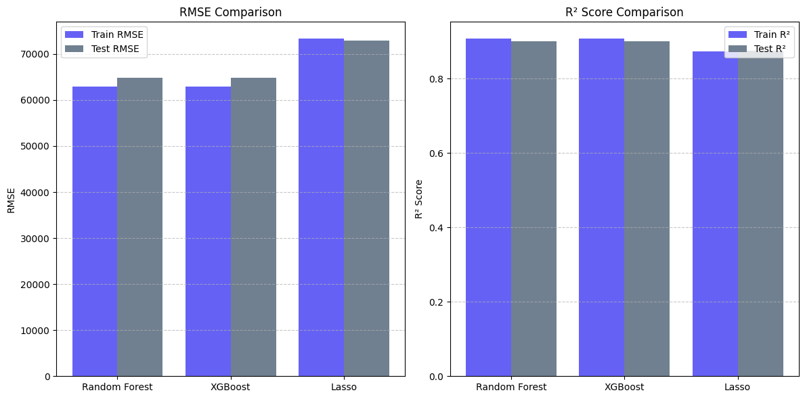
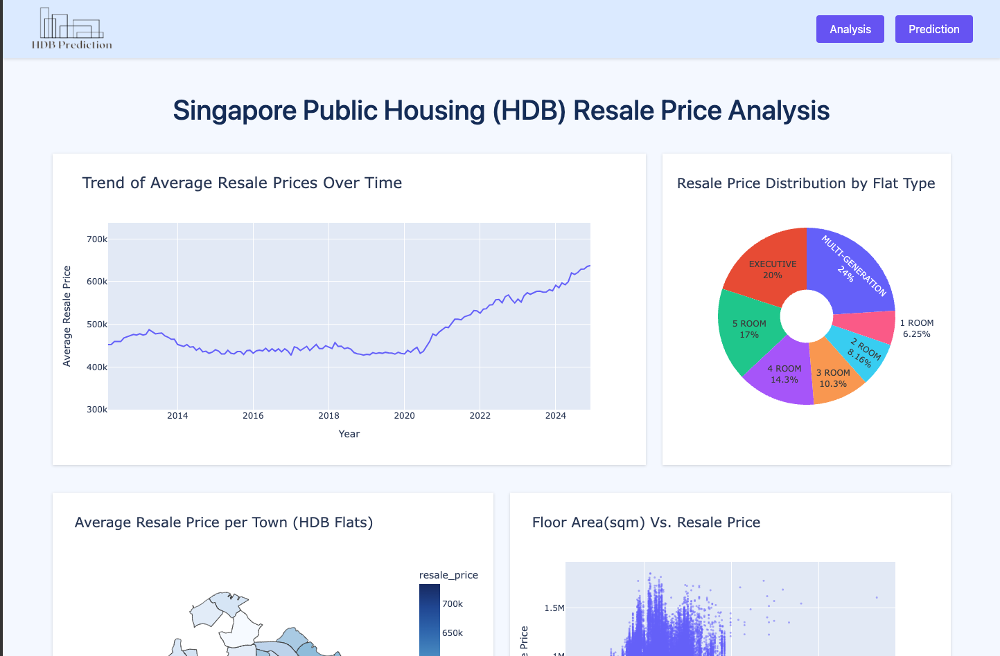
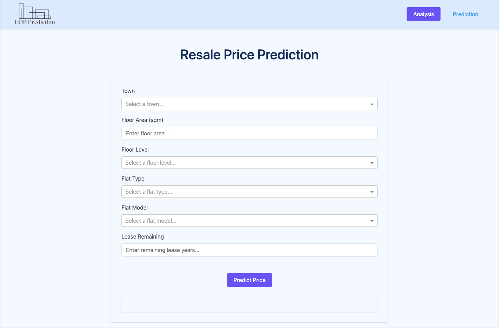

Github Link: Project Source File
Project Link: Interactive Dashboard
This project focuses on the prediction of HDB (Housing & Development Board) resale flat prices in Singapore. HDB flats constitute the vast majority of housing in Singapore, making their pricing a topic of significant interest to residents, potential buyers, and policymakers.
Motivation: The primary motivation behind this project is to apply data science techniques to a real-world problem that has a tangible impact on many people. It serves as an opportunity to:
The main goals of this project are:
The project utilizes several publicly available datasets:
flat_data( Mar 2012 to Dec 2014).csvflat_data(Jan 2015 to Dec 2016).csvflat_data(Jan-2017 onwards).csvMRT.geojson) from data.gov.sg containing
the
geographical coordinates and names of MRT stations.resale_price_index.csv) from
data.gov.sg used to adjust
historical
resale prices to a common baseline.
data/clean_hdb_coordinate_data.csv.
singapore_town_boundaries.json)
used for creating choropleth map visualizations in the dashboard.Key Data Files Generated/Used in the Project:
data/clean_hdb_resale_data.csv: The primary cleaned and merged dataset used for
exploratory
data analysis and model training. It includes features like distance to the nearest MRT and
adjusted resale
prices.data/clean_mrt_data.csv: Processed MRT station data with extracted station names
and
coordinates.data/town_mrt_distances.csv: A derived dataset containing the average distance from
HDB flats
to the nearest MRT station for each town.The project followed a structured data science workflow, detailed below:
MRT.geojson.data/clean_mrt_data.csv.remaining_lease was calculated. For older datasets, it was derived from
lease_commence_date and the transaction year. For newer datasets, it was
parsed from a
string format.
full_address column was created by combining block and
street_name.
data/clean_hdb_coordinate_data.csv to avoid repeated API calls).
sjoin_nearest function from GeoPandas was used to find the nearest MRT
station for
each HDB flat and calculate the distance in meters, which was then converted to
kilometers
(distance_km).adjusted_resale_price = resale_price * (RPI_baseline / RPI_transaction_quarter).
data/clean_hdb_resale_data.csv.
EDA was performed to uncover patterns, trends, and relationships within the data. Key visualizations and analyses included:
adjusted_resale_price and
floor_area_sqm. Bar charts for flat_type and town
distributions.
adjusted_resale_price by flat_type, town, and
storey_range.
adjusted_resale_price and
continuous
features like floor_area_sqm, remaining_lease, and
distance_km.
Based on EDA insights, the following features were engineered for model training:
month_no (month of the transaction) was
extracted from the
month column.
storey_range (e.g., '01 TO 03') was
split into
numerical min_storey and max_storey.pd.get_dummies) was
applied to
categorical features: flat_type, town, and flat_model.
drop_first=True was used to avoid multicollinearity.
block,
street_name, lease_commence_date, original resale_price,
geographical
coordinates after distance calculation).
adjusted_resale_price.train_test_split with random_state=123.
StandardScaler.RandomizedSearchCV was used to
find optimal
hyperparameters, optimizing for neg_root_mean_squared_error (Random Forest)
or
neg_mean_absolute_error (XGBoost) with 3-fold cross-validation.
LassoCV was used to determine the best
alpha (regularization strength).
RandomizedSearchCV, were saved as .pkl files
using
joblib.

For the selected XGBoost model (after RandomizedSearchCV):
An interactive dashboard was developed using Plotly Dash and Dash Bootstrap Components to visualize the analysis and provide a prediction tool.
pages/analysis.py)This page presents various visualizations derived from the HDB resale data:
Interactivity:

pages/prediction.py)This page provides an interface for users to get HDB resale price predictions:
data/town_mrt_distances.csv.
min_storey and max_storey are extracted from the selected
floorLevel.
xgb_random_search_model.pkl).
HDB-Resale-Prices-Prediction/
├── .DS_Store
├── .gitignore
├── dashboard.py # Main Dash application script
├── main.ipynb # Jupyter notebook for data processing, EDA, and model training
├── Procfile # For Heroku deployment
├── README.md # Project documentation (this file)
├── requirements.txt # Python dependencies
├── assets/ # CSS, logo for dashboard
│ ├── logo.png
│ ├── styles.css
│ ├── model_comparison.png
│ ├── analysis_page.png
│ └── prediction_page.png
├── data/
│ ├── .DS_Store
│ ├── clean_hdb_coordinate_data.csv # HDB flats with lat/lon
│ ├── clean_hdb_resale_data.csv # Main cleaned dataset for analysis/modeling
│ ├── clean_mrt_data.csv # Processed MRT station data
│ ├── singapore_town_boundaries.json # GeoJSON for map visualizations
│ ├── town_mrt_distances.csv # Average distance to MRT per town
│ ├── model/ # Saved machine learning models
│ │ ├── xgb_random_search_model.json # XGBoost model (alternative save format)
│ │ └── xgb_random_search_model.pkl # Primary XGBoost model file
│ └── raw/ # Original raw datasets
│ ├── flat_data( Mar 2012 to Dec 2014).csv
│ ├── flat_data(Jan 2015 to Dec 2016).csv
│ ├── flat_data(Jan-2017 onwards).csv
│ ├── MRT.geojson
│ └── resale_price_index.csv
└── pages/ # Dash app pages
├── analysis.py
├── fetch_map_data.py # (Potentially for map data, though main logic seems in analysis.py)
└── prediction.py
main.ipynb), Plotly
(for
interactive dashboard charts)git clone cd HDB-Resale-Prices-Predictionpython -m venv venv
source venv/bin/activate # On Windows: venv\Scripts\activate
pip install -r requirements.txtjupyter notebookmain.ipynb.main.ipynb uses
the OneMap API which requires an access token. This step was pre-computed and results
saved to
data/clean_hdb_coordinate_data.csv. If you re-run this specific section,
you'll need to
replace "Bearer YOUR_ACCESS_TOKEN" with a valid token. The rest of the
notebook can run
using the pre-computed CSV.
python dashboard.pyhttp://120.0.0.1:8050/ (or the address shown
in your
terminal).data.gov.sg or other relevant APIs to keep the model and analyses current.